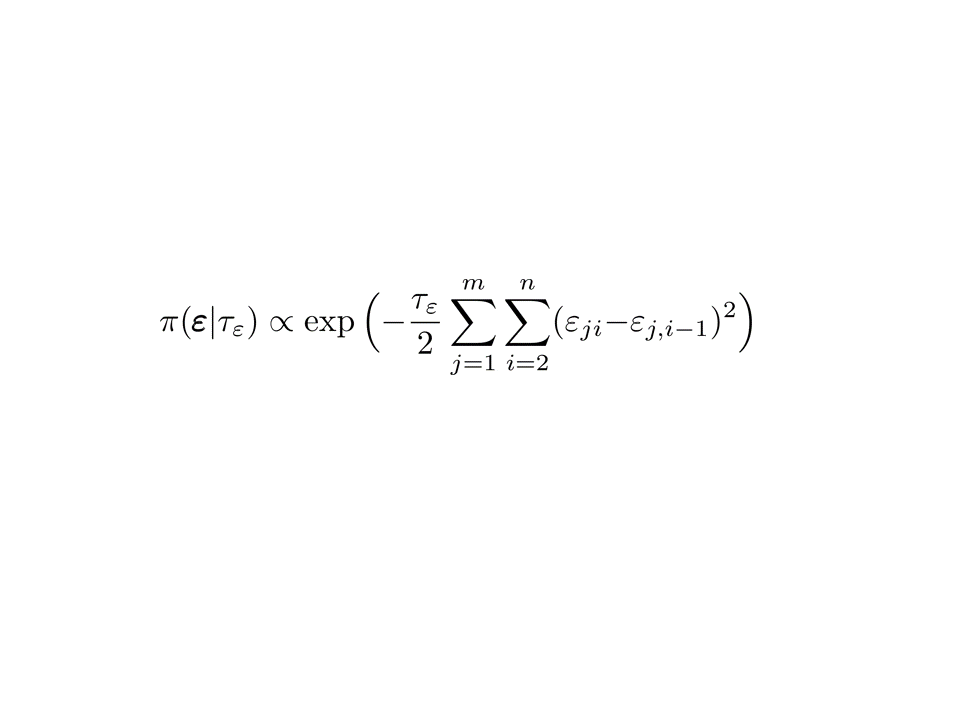
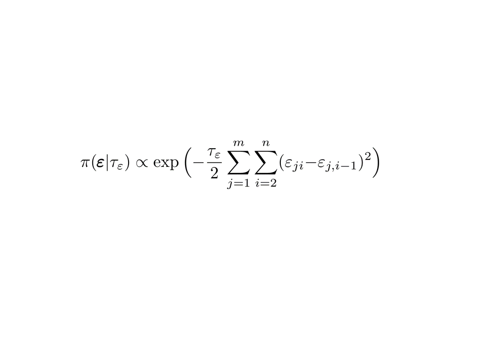

🧠 Make Me See It, Not Just Prove It
It is not only about the quality of your research — it's about how well and how long you can grab people's attention.
You often have two options:
- Fill your slides with equations that many will struggle to follow,
- Or invest a bit more time to convey the ideas in a creative and intuitive way.
Personally, I avoid attending most seminars for two reasons:
- The presenter doesn't know how to explain the concepts clearly.
- The topic doesn't interest me — but I have to attend out of duty, program requirements, or requests from my supervisor.
I deeply appreciate every researcher and the effort they invest in their work. So here’s a kind reminder:
It took you months — maybe years — to reach what you're presenting. Please don’t expect your audience to follow all the equations and notation in one hour. What we really need is the **idea**, the **insight**, and your **creativity in explaining it**.
I'm a visual learner. I respect other types of learners, but when concepts are visualized well, they transcend learning styles. Here's an example:
 

These two show the same thing — an interaction between space and time. One reaches more minds.
– Esmail Abdul Fattah